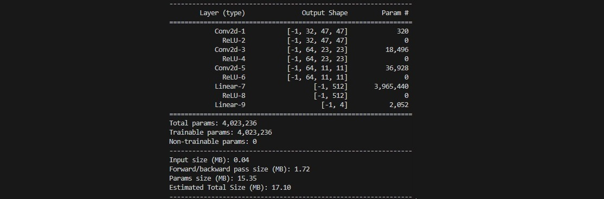

Project 6: Reinforcement Gaming Agent
DQN Model Building
Now that we have successfully built the Spaceship Dodger game and a custom Gym environment, we can move to the next critical step: training the AI agent using a Deep Q-Network (DQN).
Since training an RL agent is unstable when learning from sequential data, we use a Replay Buffer to store past experiences and sample them randomly for training. This helps break correlations and improves learning stability.
import random
import numpy as np
import torch
class ReplayBuffer:
def __init__(self, capacity):
self.capacity = capacity
self.buffer = []
self.position = 0
def push(self, state, action, reward, next_state, done):
if len(self.buffer) < self.capacity:
self.buffer.append(None)
self.buffer[self.position] = (state, action, reward, next_state, done)
self.position = (self.position + 1) % self.capacity
def sample(self, batch_size):
batch = random.sample(self.buffer, batch_size)
states, actions, rewards, next_states, dones = zip(*batch)
return (
torch.tensor(np.array(states), dtype=torch.float32).squeeze(1),
torch.tensor(actions, dtype=torch.int64),
torch.tensor(rewards, dtype=torch.float32),
torch.tensor(np.array(next_states), dtype=torch.float32).squeeze(1),
torch.tensor(dones, dtype=torch.bool)
)
def __len__(self):
return len(self.buffer)
Now, we define the neural network that predicts Q-values for each possible action. The architecture includes 3 convolutional layers, 2 fully connected layers and ReLU activation function:

class DQN(nn.Module):
def __init__(self, input_shape, num_actions):
super(DQN, self).__init__()
self.conv = nn.Sequential(
nn.Conv2d(input_shape[0], 32, kernel_size=3, stride=2),
nn.ReLU(),
nn.Conv2d(32, 64, kernel_size=3, stride=2),
nn.ReLU(),
nn.Conv2d(64, 64, kernel_size=3, stride=2),
nn.ReLU(),
)
conv_out_size = self._get_conv_out(input_shape)
self.fc = nn.Sequential(
nn.Linear(conv_out_size, 512),
nn.ReLU(),
nn.Linear(512, num_actions)
)
def _get_conv_out(self, shape):
with torch.no_grad():
return self.conv(torch.zeros(1, *shape)).view(1, -1).size(1)
def forward(self, x):
x = x.float() / 255.0 # Normalize pixel values
conv_out = self.conv(x).view(x.size()[0], -1)
return self.fc(conv_out)
Now we bring everything together in train_dqn.py. Note that this file also includes the parameters for the model training.
| Parameter | Value | Explanation | How it works |
|---|---|---|---|
| GAMMA | 0.97 | Gamma controls how much the agent cares about future rewards. In the Q-learning update, the future reward is multiplied by gamma. So a reward received one step ahead is valued at 0.97 times its actual value, two steps ahead at 0.97², and so on. | If you expect a reward of 100 in one step, its discounted value becomes 100 × 0.97 = 97. In two steps, it would be 100 × 0.97² ≈ 94.09. |
| LR (Learning Rate) | 5e-4 | The learning rate determines how quickly the neural network updates its weights during training. A small learning rate, like 0.0005, makes sure that updates are gradual, leading to stable learning. | When the network computes the gradient to update weights, each update is scaled by 0.0005. If the gradient suggests a change of 1 unit, the actual change applied is just 0.0005 units. |
| BATCH_SIZE | 128 | Batch size is the number of experiences sampled from the replay buffer to update the network in one go. Using 128 samples helps smooth out the learning by providing a robust estimate of the gradient. | Instead of updating your strategy based on one single experience (which can be noisy), you blend 128 experiences together, much like making a smoothie for a richer taste. |
| MEMORY_SIZE | 100000 | This is the maximum number of past experiences that the agent can store. The replay buffer allows the agent to learn from a wide variety of experiences, not just the most recent ones. | With a memory size of 100,000, the agent has a huge “memory bank” to pull from, which can be crucial for learning diverse strategies. |
| EPSILON_START | 1.0 | Epsilon determines how often the agent takes a random action (exploration) versus relying on its learned policy (exploitation). | Starting at 1.0 means the agent is initially exploring entirely at random, while 0.01 means it rarely takes random actions later on. |
| EPSILON_END | 0.01 | Minimum exploration rate after decay. | With an epsilon rate of 0.01 the agent still explores occasionally, even in later stages of training. The higher the number, the more consistant exploration at a later stage. |
| EPSILON_DECAY | 200000 | This value indicates the number of steps over which the epsilon value decays from its start value (1.0) to its end value (0.01). | It will take 200000 steps to go from the initial value 1.0 to the end value 0.01. |
| TARGET_UPDATE | 10000 | In Deep Q-Networks (DQN), there is a target network used to stabilize training. The target network’s weights are updated with the current network’s weights only every 10,000 steps. | Think of it like syncing your phone with your computer every once in a while rather than constantly—this periodic update helps ensure stability in what the agent is learning. |
| NUM_EPISODES | 3000 | Total number of training episodes that the agent runs through during training. | The agent will go through 3000 game sessions if episodes are set to 3000. |
| MAX_STEPS | 10000 | Maximum steps allowed per episode. Prevents episodes from running indefinitely, ensuring training efficiency. | Each of the episodes defined is limited by 10'000 steps that the agent can take. Once reached the episode will end. |
import os
import json
import torch
import torch.nn as nn
import torch.optim as optim
import numpy as np
import random
from spaceship_env import SpaceshipDodgerEnv
from dqn_model import DQN
from replay_buffer import ReplayBuffer
import matplotlib.pyplot as plt
GAMMA = 0.98
LR = 1e-4
BATCH_SIZE = 64
MEMORY_SIZE = 50000
EPSILON_START = 1.0
EPSILON_END = 0.05
EPSILON_DECAY = 10000
TARGET_UPDATE = 2000
NUM_EPISODES = 500
MAX_STEPS = 5000
device = torch.device("cuda" if torch.cuda.is_available() else "cpu")
print(f"Using device: {device}")
env = SpaceshipDodgerEnv()
dqn = DQN(input_shape=(4, 96, 96), num_actions=4).to(device)
target_dqn = DQN(input_shape=(4, 96, 96), num_actions=4).to(device)
target_dqn.load_state_dict(dqn.state_dict())
optimizer = optim.Adam(dqn.parameters(), lr=LR)
replay_buffer = ReplayBuffer(MEMORY_SIZE)
# Ask the user whether to start from scratch or resume from a checkpoint.
resume_training = input("Do you want to resume training from a checkpoint? (y/n): ").strip().lower()
if resume_training.startswith('y'):
model_file = input("Enter the model checkpoint filename (e.g., spaceship_dqn.pth): ").strip()
if os.path.isfile(model_file):
dqn.load_state_dict(torch.load(model_file, map_location=device))
print("Model checkpoint loaded successfully!")
else:
print("Model file not found. Starting training from scratch.")
opt_file = input("Enter the optimizer checkpoint filename (or leave blank to skip): ").strip()
if opt_file and os.path.isfile(opt_file):
optimizer.load_state_dict(torch.load(opt_file, map_location=device))
print("Optimizer checkpoint loaded successfully!")
else:
print("No optimizer checkpoint loaded. Continuing without it.")
# Optionally, load additional training state like step_count:
state_file = input("Enter training state filename (JSON with step_count) (or leave blank to skip): ").strip()
if state_file and os.path.isfile(state_file):
with open(state_file, "r") as f:
training_state = json.load(f)
step_count = training_state.get("step_count", 0)
print(f"Resuming with step_count = {step_count}")
else:
step_count = 0
print("No training state loaded. Starting step_count from 0.")
else:
step_count = 0
print("Starting training from scratch.")
def get_epsilon(step):
return EPSILON_END + (EPSILON_START - EPSILON_END) * np.exp(-1.0 * step / EPSILON_DECAY)
for episode in range(NUM_EPISODES):
state = env.reset()
state = np.expand_dims(state, axis=0)
episode_reward = 0
for t in range(MAX_STEPS):
step_count += 1
epsilon = get_epsilon(step_count)
if episode % 100 == 0:
env.render()
else:
env.render(mode="rgb_array")
if random.random() < epsilon:
action = env.action_space.sample()
else:
with torch.no_grad():
state_tensor = torch.tensor(state, dtype=torch.float32, device=device)
q_values = dqn(state_tensor)
action = torch.argmax(q_values).item()
next_state, reward, done, _ = env.step(action)
next_state = np.expand_dims(next_state, axis=0)
episode_reward += reward
replay_buffer.push(state, action, reward, next_state, done)
state = next_state
if len(replay_buffer) > BATCH_SIZE:
states, actions, rewards, next_states, dones = replay_buffer.sample(BATCH_SIZE)
states = states.to(device)
actions = actions.to(device).unsqueeze(1)
rewards = rewards.to(device)
next_states = next_states.to(device)
dones = dones.to(device)
current_q_values = dqn(states).gather(1, actions).squeeze(1)
next_q_values = target_dqn(next_states).max(1)[0]
target_q_values = rewards + (1 - dones.float()) * GAMMA * next_q_values
loss = nn.MSELoss()(current_q_values, target_q_values)
optimizer.zero_grad()
loss.backward()
optimizer.step()
if step_count % TARGET_UPDATE == 0:
target_dqn.load_state_dict(dqn.state_dict())
if done:
break
print(f"Episode {episode + 1}/{NUM_EPISODES}, Reward: {episode_reward:.2f}, Epsilon: {epsilon:.3f}")
# Save checkpoints at the end of training.
torch.save(dqn.state_dict(), "spaceship_dqn.pth")
torch.save(optimizer.state_dict(), "optimizer.pth")
# Optionally, save training state such as step_count.
with open("train_state.json", "w") as f:
json.dump({"step_count": step_count}, f)
env.close()
This code can be used to run the final model and use it to play a game: